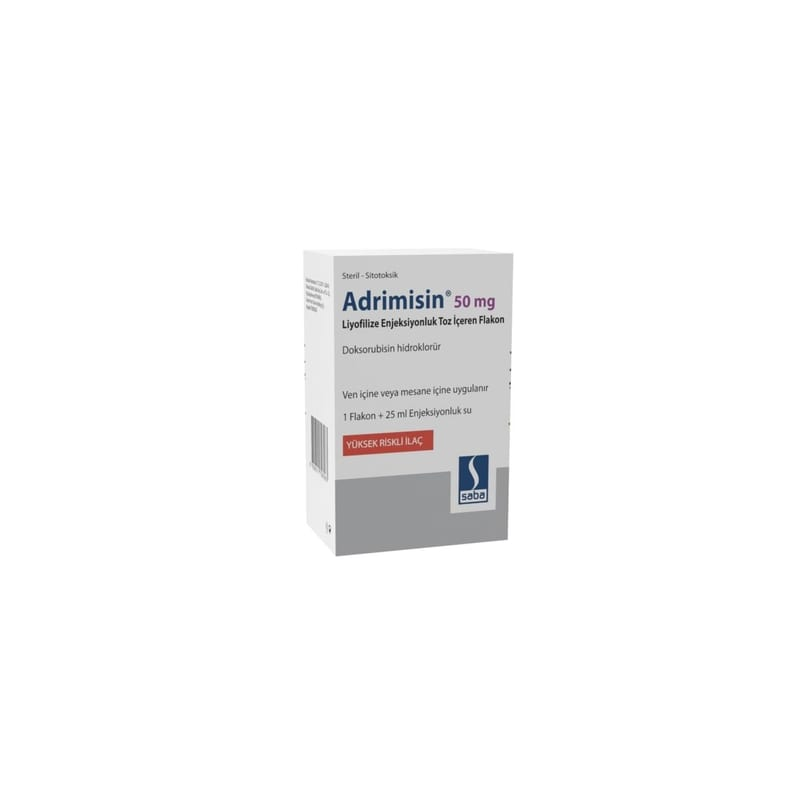

Adrimisin 50 mg Liyofilize Enjeksiyonluk Toz İçeren Flakon, 1 Adet

Ne için kullanılır
KT · Bölüm 1 ADRİMİSİN, etkin madde olarak doksorubisin hidroklorür içeren, renksiz cam flakonlar içerisinde sunulan, turuncu-kırmızı renkte bir ilaçtır. Kemoterapi (kanser tedavisi) için kullanılan ve sitotoksik (kanser hücresini öldürücü) olarak adlandırılan bir ilaç grubuna aittir. Bu ilaç, kanser hücreleri gibi aktif şekilde büyüyen hücrelerin büyümelerinin yavaşlamasına veya durmasına neden olmaktadır ve bu hücrelerin ölme olasılıklarını artırmaktadır. ADRİMİSİN tedavisi, normal ve sağlıklı dokudan ziyade kanserli dokunun selektif (seçici) olarak öldürülmesine yardımcı olmaktadır. Hem yetişkinlerde hem de çocuklarda kullanılabilir.
ADRİMİSİN, tek başına veya diğer ilaçlarla birlikte çeşitli kanserleri tedavi etmek için kullanılır. Nasıl kullanıldığı tedavi edilen kanser türüne bağlıdır. ADRİMİSİN, meme, akciğer, mesane, tiroid bezi, yumurtalık kanserleri, kemik sarkomu ve yumuşak doku sarkomu, Hodgkin ve Hodgkin dışı lenfomalar, nöroblastoma, Wilms’ tümörü, akut lenfoblastik lösemi, akut miyeloid lösemi gibi çeşitli neoplastik (tümörle ilişkili) hastalıkların gerilemesi ile kendini gösteren olumlu sonuçlar vermiştir. ADRİMİSİN gerek transüretral rezeksiyon (idrar yolundan girilerek yapılan cerrahi önleyici tedavi) sonrasında gerekse tedavi edici amaçlar için intravesikal yoldan verildiğinde yüzeysel mesane tümörlerinde olumlu sonuçlar elde edilmiştir.